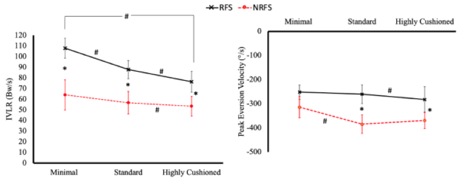
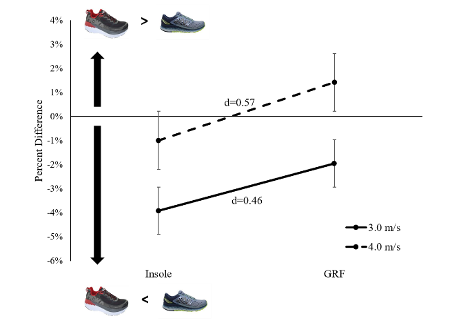

Abstracts
Effects of minimal, traditional and maximal shoes on lower limb mechanics in rear and non-rearfoot strike runners
Richard T. Beltran, Jake A. Melaro, Isabel Moore, Max R. Paquette
Musculoskeletal Analysis Laboratory, University of Memphis, Memphis, TN, U.S.A
Running barefoot, in minimal shoes, or in traditional shoes alters certain injury-related biomechanical variables and these footwear effects can be influenced by different foot strike patterns [1]. The interaction between footwear and foot strike pattern might change when studying different types of footwear including highly cushioned shoes. PURPOSE: To assess the interaction of footwear and foot strike pattern on injury-related biomechanical variables in experienced runners. METHODS: Six rear (RFS) and seven non-rearfoot strike (NRFS) experienced runners (10 years + of running 16+km/week) completed five running trials over a 25m runway at 3.5m/s (±5%) in minimal (MSH), standard (SH) and high cushioned (HC) shoes. Selected injury-related biomechanical variables were computed from 3D kinematic and ground reaction force data collected simultaneously. A mixed-design repeated measures ANOVA was used to test interaction effects for all variables. Paired t-tests were used to decipher any interaction effect and Cohen’s d effect sizes were computed to assess mean difference magnitudes. Given the preliminary nature of this work and the small sample size, alpha level was set to 0.1. RESULTS: Strike index confirmed the different strike patterns while running in standard shoes between RFS (15.2±3.1%) and NRFS (102.8±11.8%) groups (p<0.001). Interaction effects were not observed for any of the variables except for peak eversion velocity (p=0.1) and instantaneous vertical loading rate (IVLR; p=0.1) (Figure 1). Main footwear effects were observed for IVLR (p=0.004) and peak eversion velocity (p=0.01). Main foot strike effects were observed for step length (p=0.041), strike index (p=0.00), and IVLR (p=0.00). CONCLUSION: Similar to prior research [1], these current preliminary findings suggest there might be an interaction between foot strike and footwear in experienced runners for peak eversion velocity and IVLR. Thus, if these biomechanical variables are of interest to scientists or clinicians, these findings suggest that footwear type and strike pattern should both be considered in research or return to running programs.

Figure 1. Peak eversion velocity and instantaneous vertical loading rate (IVLR) in the three footwear conditions in rear (RFS; black) and non-rearfoot strike (NRFS; red) runners. *: foot strike group difference within footwear; #: footwear difference within foot strike group (p < 0.1).
References: 1. Paquette et al. (2013) Acute effects of barefoot, minimal shoes and running shoes on lower limb mechanics in rear and forefoot strike runners. Footwear Science. 2013;5(1):9–18.
_______________________________________________________________________
Comparison of Between-Footwear Difference in Vertical Force Between In-Shoe and Force Plate Measurements During Running
Richard T. Beltran, Max R. Paquette
Musculoskeletal Analysis Laboratory, University of Memphis, Memphis, TN, U.S.A
Introduction
Footwear effects on impact-related variables such as vertical ground reaction force (GRF) variables are often studied [1] given the potential influence of GRF variables on running injury risks [2]. However, GRF variables might affect how vertical forces are influenced by different running shoes given the various sole materials and characteristics. This study compared shoe differences of a highly cushioned and a neutral cushion shoe in peak vertical force between in-shoe and GRF measures at two running speeds. We hypothesized that the highly vs neutral cushion between-shoe difference would be negative (i.e., smaller in highly cushioned) using in-shoe measures but positive (i.e., larger in highly cushioned) using GRF measures at both speeds.
Methods
After a warm-up, 10 participants completed 2-minute runs at 3.0m/s and 4.0m/s on a force treadmill in two types of shoes: neutral cushion (NC: New Balance 1080) and highly cushioned (HC: HOKA Bondi 4). While running, in-shoe peak vertical force was collected from wireless vertical forces insoles (200Hz, loadsol, Novel) and peak vertical GRF were collected from the force treadmill (1200Hz, Bertec). Data were collected during the last 15 seconds of each trial and 8-10 steps were used for analysis. The between-shoe difference was calculated as the different in vertical force between the HC and NC shoes (i.e., negative value = smaller force in HC). Paired t-tests and Cohen’s d effect sizes were used to assess between-shoe percent change (%Δ) in peak
vertical force between instruments.
Results and Discussion
At 3.0 m/s, the between-shoe %Δ was negative for both instruments but between-shoe %Δ from in-shoe measures was more negative than from GRF measures (p = 0.11; Fig. 1). At 4.0 m/s, the between-shoe %Δ was negative for in-shoe measures but positive for GRF measures (p = 0.07; Fig. 1).

Figure 1. Between-shoe (HOKA-New Balance) percent difference in peak vertical force from in-shoe measures (Insole) and from ground reaction force (GRF) at two speeds.
Significance
These preliminary findings suggest that since in-shoe and GRF measurements of peak vertical force appear to provide different between-shoe differences in vertical force, biomechanists should consider the type of instrumentation used in running footwear studies. This might be particularly important at faster running speeds given the different direction (i.e., more or less force in one shoe vs another) of between-shoe difference in vertical force at 4.0 m/s.
References 1. Paquette et al, 2013. Footwear Science. 5:1, 9-18.
2. Davis et al, 2016. BJSM. 50 (14), 887-92.